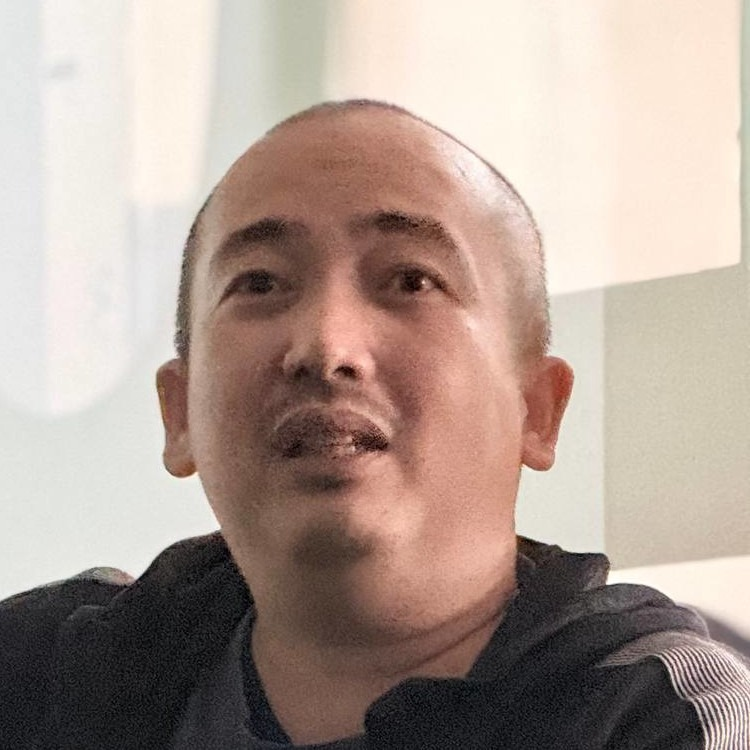

Irvan Putra
Software projects, research and community activity.
Software engineer in Jakarta, with work across Traveloka, Bukalapak, Feedloop and Pashouses. Now freelance, alongside research and community work.

Portrait: PyCon ID2026 organizers.
- Public profile
- irvan-putra on GitHub
- Personal website
- vanipy.com
Projects
Public repositories are the source for project names and descriptions.
Browse public repositoriesCareer
Roles and dates from LinkedIn, checked 18 November 2026.
- Software Engineer · FreelanceFebruary 2024 - present
- Software Engineer, Backend Lead · PashousesOctober 2021 - January 2024
- Senior Software Engineer · FeedloopDecember 2020 - October 2021
- Tech Learning Manager · BukalapakJuly 2018 - September 2019
- Software Engineer · TravelokaAugust 2014 - July 2018
- IT Staff · Kiwoom Securities IndonesiaMarch 2013 - May 2014
Web development and programming.
- Marketing & CS Staff · Kiwoom Securities IndonesiaApril 2011 - February 2013
Planning and Coordination department.
Research
Edge AI and offline language models for education. His personal site describes work on questions reviewed by teachers and offline evaluation of student answers in remote Indonesian classrooms.
EdgePrompt: Engineering Guardrail Techniques for Offline LLMs in K-12 Educational Settings
PromptEng Workshop at ACM WebConf, 2025. Co-authored with Riza Alaudin Syah, Christoforus Yoga Haryanto, Emily Lomempow and Krishna Malik.
Community work
- Python Indonesia: co-admin, daily community management, conference paper review and sponsorship work for PyCon APAC 2024.
- BuildClub.ai Jakarta: city lead and meetup organizer, connecting builders through introductions, focused work and shared demos.
- Code4Nation Indonesia: community work including three hackathons, as described in his LinkedIn profile.
- VNProject Indonesia: a community for visual novel developers and players, including game jams and convention activity.
- JVM Indonesia: crew member since August 2024, per LinkedIn.
Sources: LinkedIn and personal website.
BuildClub interview
From Energy to Legacy: Irvan Putra on Leading Jakarta's Build Club
2 February 2026 · BuildClub
The interview covers how he kept the Jakarta meetup going, tried new topics and venues, worked with communities such as Python Indonesia, and encouraged builders to demo their work. It also discusses sponsor expectations, pacing and making room for new city leads.
Education and medals
- Universiti Utara Malaysia, 2007-2011: Business Mathematic, Management Sciences and Quantitative Methods. PPI UUM activity and participation with the university team in the International Scientific Olympiad on Mathematics in Iran, 2009.
- SMA Plus Negeri 17 Palembang, 2004-2007: Natural science and Thinking Hobby-Club. Indonesian Computer Olympiad provincial gold in 2005; provincial and national silver in 2006, followed by national team bootcamp participation.
Source: LinkedIn public education section.
Work and services
Code, websites, apps and pipelines; legacy-system migration; documentation and technical reviews; engineering training, tutorial videos and consulting.
Listed on vanipy.com.